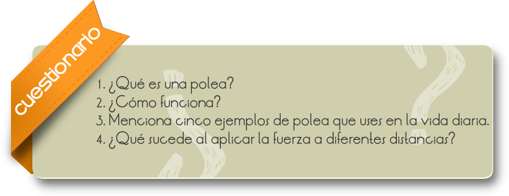
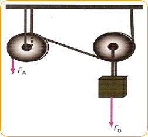

Una polea, también llamada garrucha, carrucha, trocla, trócola o carrillo, es una máquina simple que sirve para transmitir una fuerza. Se trata de una rueda, generalmente maciza y acanalada en su borde, que, con el concurso de una cuerda o cable que se hace pasar por el canal ("garganta"), se usa como elemento de transmisión para cambiar la dirección del movimiento en máquinas y mecanismos. Además, formando conjuntos —aparejos o polipastos— sirve para reducir la magnitud de la fuerza necesaria para mover un peso, variando su velocidad.
Formar y observar como funciona una polea cuando se le aplica una fuerza a diferentes distancias.
Reúnete con un equipo de tres o cuatro compañeros y construye un dispositivo para probar el funcionamiento de las palancas.
1. Coloca la piedra a una distancia de lo que quieras levantar.
2. Pon el palo de escoba como se muestra en la figura 2.26.ESCANEAR
3. Aplica una fuerza a diferente distancias dA y observa lo que sucede.
4. Cambia la distancia d0 y repite el paso 3.
5. Escribe en tu cuaderno tus conclusiones.

Comentarios
La polea esta formada por una rueda con eje, pero tiene un canal por el que pasa una cuerda. Las poleas son muy utilizadas en los pozos de agua, en construcciones, en el alpinismo, entre muchas otras aplicaciones.
Una polea, también llamada garrucha, carrucha, trocla, trócola o carrillo, es una máquina simple que sirve para transmitir una fuerza.
Se trata de una rueda, generalmente maciza y acanalada en su borde, que, con el concurso de una cuerda o cable que se hace pasar por el canal (garganta), y se usa como elemento de transmisión para cambiar la dirección del movimiento en máquinas y mecanismos; además formando conjuntos —aparejos o polipastos— sirve para reducir la magnitud de la fuerza necesaria para mover un peso, variando su velocidad.
Según definición de Hatón de la Goupillière: «la polea es el punto de apoyo de una cuerda que moviéndose se arrolla sobre ella sin dar una vuelta completa» 1 actuando en uno de sus extremos la resistencia y en otro la potencia.

2.26 ¿Qué sucede si aumenta la velocidad dA y mantienes fija d0?